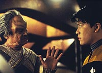
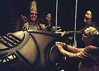
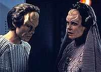
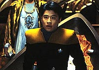

|
MANCHETE
DO EPISDIO
Debate
sobre vida aps a morte convida telespectador a manter a mente
aberta
Episdio
anterior | Prximo
episdio
Sinopse:
Data Estelar: 48623.5.
Investigando a possibilidade de ter encontrado um novo elemento em
corpos rochosos que compunham os anis de um planeta, um grupo avanado
desce para um dos asterides e encontra o solo coberto de cadveres
revestidos por cpsulas residuais.
Enquanto o grupo conduz uma sondagem visual, um fenmeno
subespacial ocorre, o que os faz chamar por um transporte de emergncia.
Mas quando o grupo transportado para a Voyager, Kim no retorna.
Em seu lugar vai uma das cpsulas.
 Harry
se encontra entre pessoas de uma raa cheia de rituais e que
acreditam que ele veio do alm. Ele frequentemente perguntado
sobre uma "prxima emanao". Uma aliengena chamada
Ptera, enquanto isso, ressuscitada na Voyager. Ela perde sua f
na crena de uma prxima vida, enquanto Harry objeto de intensa
curiosidade e estudo pelo povo de Patera.
Ele s consegue retornar Voyager substituindo um dos seres
escalados para ir para a "prxima emanao" e sendo
posteriormente ressuscitado por seus colegas tripulantes.
Comentrios:
H uma frase da capit Janeway durante este episdio que
explica por que "Emanations", apesar de seus
problemas, um segmento to fascinante. "O que no sabemos
sobre a morte muito, muito maior do que o que sabemos", ela
diz a Harry Kim.
Girando sobre as questes culturais que envolvem os mistrios da
morte --incluindo a f de uma continuao aps o fim da vida
biolgica--, o episdio consegue trazer tona vrios
questionamentos.
O mais forte deles a demonstrao da fragilidade da prpria f,
quando exposta a fatos que desafiam as teorias sobrenaturais. Um
exemplo clssico real a derrocada da teoria criacionista (que
interpreta a criao do Universo como descrita na Bblia) aps
as irrefutveis informaes apresentadas por Charles Darwin em
sua teoria da evoluo, estabelecendo a natureza da origem das espcies
biolgicas e de seus parentescos entre si.
 No
episdio, Harry no precisa falar muito sobre a verso da
"prxima emanao" que ele conheceu no campo de asterides
para ser considerado pelos religiosos como uma ameaa crena
local. Mais que isso, ele de fato desperta o ceticismo em um aliengena
que j estava prontinho para deixar o mundo dos vivos.
Alis, apesar de Harry mesmo lembrar que no pode interferir com a
cultura e o modo de pensar dos aliengenas, na hora do aperto o
alferes no hesita em usar sua lbia para convencer seu colega de
quarto a desistir de bater as botas para ceder-lhe o lugar.
Quando o personagem descobriu estar diante de uma sociedade que
valoriza o sacrifcio de seres pela crena de que h uma vida aps
a morte, ele prontamente criticou o modo de vida dos
extraterrestres, algo nada compatvel com a Primeira Diretriz. A
atitude de Harry foi eficiente para definir quem de fato ele : um
jovem impetuoso e idealista, e no um comandante experiente e
consciente de seus atos. Ponto para o desenvolvimento do personagem.
Outro personagem que teve a chance de mostrar seus dotes foi o
comandante Chakotay. O primeiro-oficial mostra alto conhecimento em
antropologia e costumes ritualsticos, funcionando durante a misso
de explorao do grupo avanado como uma mistura de Indiana Jones
com Sherlock Holmes, deduzindo fatos sobre a cultura aliengena que
depositava os corpos por l.
 Em
compensao, a capit Janeway no se saiu muito bem. No intuito
de recuperar Harry, ela no hesitou em tentar mandar Ptera (a aliengena
que foi despachada de seu mundo, mas, graas Voyager, sobreviveu
para contar a histria) de volta a seu prprio mundo, a despeito
do impacto que a ressurreio poderia causar na cultura aliengena.
Ao contrrio de Harry, a capit nem ao menos se lembrou de que
estava sob uma Primeira Diretriz. Felizmente, a capit deu sorte: o
procedimento falhou e Ptera morreu, como deveria ser.
Quem tambm deu uma pisada de bola foi Brannon Braga, o criador do
episdio, e Andre Bormanis, o consultor cientfico da srie. Ver
um pequeno asteride com atmosfera de oxignio e nitrognio e com
gravidade equivalente da Terra, apesar de sua massa infinitamente
inferior e da ausncia de formas de vida fotossintetizantes (ou
seja, capazes de pegar luz e dixido de carbono e converter em oxignio),
difcil de engolir.
Mas o fato no surpreende: desde o comeo Voyager j mostrou que
cincia no o seu forte. Alm do mais, a opo
"cientificamente incorreta" poderia se justificar pelo
custo proibitivo de filmar cenas simulando baixa gravidade e
exigindo roupas de astronauta para os tripulantes. Tudo isso nos
obriga a fazer vista grossa.
 Mesmo
levando isso em conta, todos os problemas so facilmente superados
pela fascinao exercida pelo tema abordado. Tambm foi muito
feliz a escolha das crenas aliengenas, que em muito lembram os
costumes dos antigos egpcios de mumificar seus mortos e esperar
uma vida aps a morte, propiciada pela ressurreio de seu corpo
fsico atual.
Mas a melhor qualidade do episdio foi a forma como ele concluiu a
histria, representando em grande estilo o que Jornada nas
Estrelas h dcadas tenta dizer ao mundo: devemos manter a
mente aberta, livre de preconceitos.
Em vez de optar por um final claro e cristalino, do tipo "os
aliengenas acham que vo a uma prxima emanao, mas na
verdade s so levados para um asteride, onde apodrecero pelo
resto da eternidade", o episdio termina com um tom de mistrio,
de falta de respostas, quando Janeway conta a Harry sobre a estranha
forma de energia que sai dos corpos sem vida e absorvida por um
campo energtico nos anis do planeta.
Esse era o nico modo de concluir o episdio satisfatoriamente:
quando esto em pauta questes filosficas e religiosas, o mistrio
sempre estar rondando, por mais que nos esforcemos para desvend-lo.
A histria conseguiu abordar satisfatoriamente um tema delicado, e
inexplorado em Jornada nas Estrelas, tornando-se um dos
poucos segmentos realmente originais da primeira temporada de Voyager.
Citaes:
Janeway - "What we don't
know about death is far, far greater than what we do know."
("O que no sabemos sobre a morte muito, muito maior do que
o que sabemos.")
Trivia:
 "Pensei que seria interessante
fazer um episdio que mostrasse que a tripulao de Voyager tem
um bocado de respeito pelas outras culturas.", disse Brannon
Braga revista Cinefantastique em 1995. "A sequncia no
asteride, quando os corpos so descobertos", prossegue
Braga, " uma tentativa dar a Chakotay certa personalidade,
mostrar que ele um expert em coisas de paleontologia... e que ele
bem inteligente."
"Pensei que seria interessante
fazer um episdio que mostrasse que a tripulao de Voyager tem
um bocado de respeito pelas outras culturas.", disse Brannon
Braga revista Cinefantastique em 1995. "A sequncia no
asteride, quando os corpos so descobertos", prossegue
Braga, " uma tentativa dar a Chakotay certa personalidade,
mostrar que ele um expert em coisas de paleontologia... e que ele
bem inteligente."
Ficha
tcnica:
Escrito por Brannon Braga
Dirigido por David Livingston
Exibido em 13/03/1995
Produo: 009
Elenco:
Kate Mulgrew como
Kathryn Janeway
Robert Beltran como Chakotay
Roxann Biggs-Dawson como B'Elanna Torres
Robert Duncan McNeill como Tom Paris
Jennifer Lien como Kes
Ethan Phillips como Neelix
Robert Picardo como Doutor
Tim Russ como Tuvok
Garrett Wang como Harry Kim
Elenco convidado:
Martha Hackett como Seska
Jefrey Alan Chandler como Hatil
Jerry Hardin como dr. Neria
John Cirigliano como aliengena 1
Robin Groves como a esposa de Hatil
Cecile Callan como Ptera
Episdio
anterior | Prximo
episdio
|